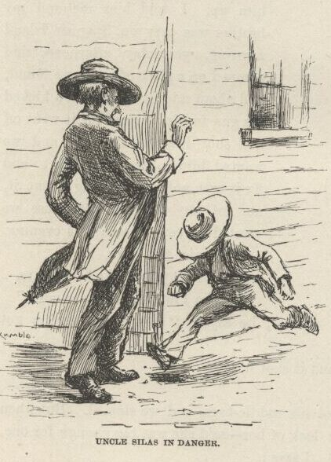
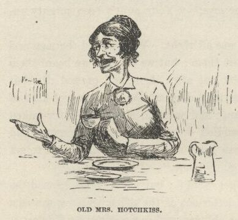
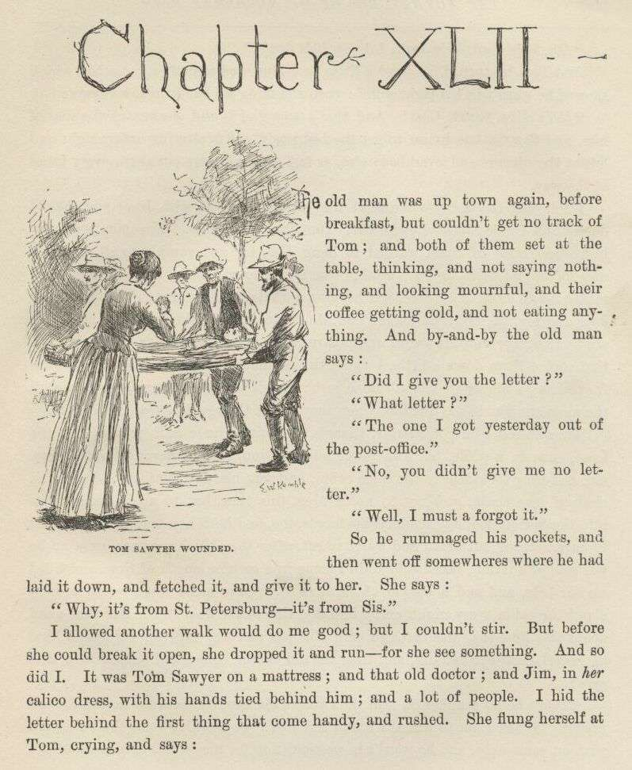
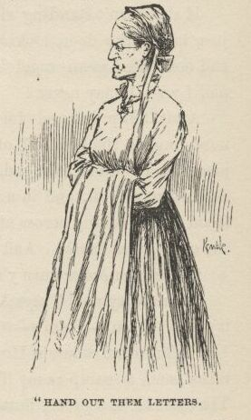
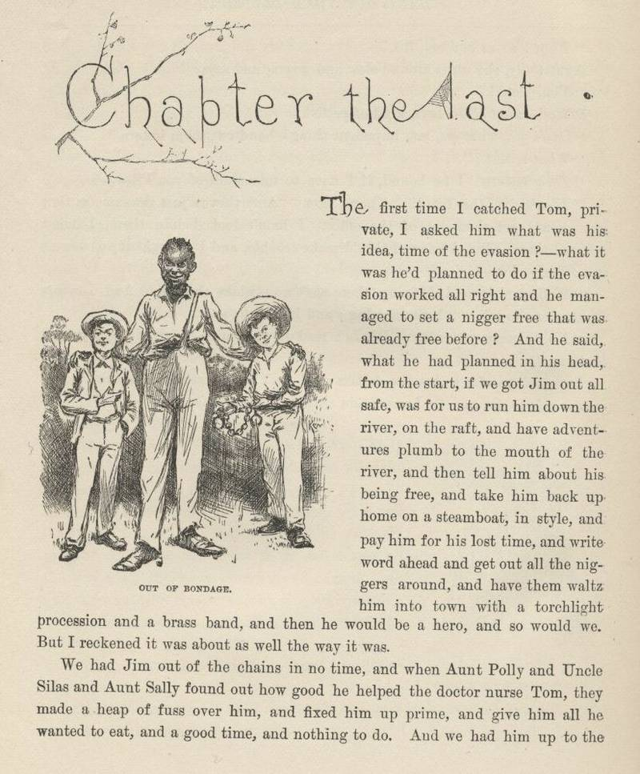
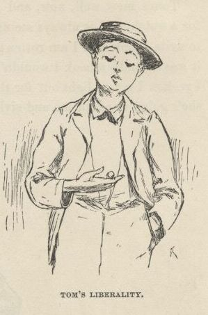
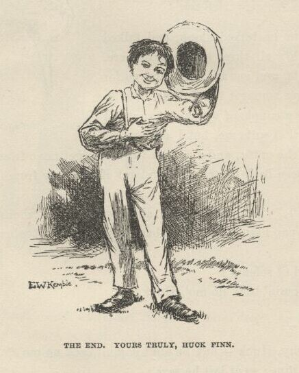

Adventures of Huckleberry Finn

"I hain't been nowheres," I says, "only just hunting for the runaway nigger—me and
Sid."
"Why, where ever did you go?" he says. "Your aunt's been mighty uneasy."
"She needn't," I says, "because we was all right. We followed the men and the dogs,
but they outrun us, and we lost them; but we thought we heard them on the water, so
we got a canoe and took out after them and crossed over, but couldn't find nothing
of them; so we cruised along up-shore till we got kind of tired and beat out; and
tied up the canoe and went to sleep, and never waked up till about an hour ago; then
we paddled over here to hear the news, and Sid's at the post-office to see what he
can hear, and I'm a-branching out to get something to eat for us, and then we're going
home."
So then we went to the post-office to get "Sid"; but just as I suspicioned, he warn't
there; so the old man he got a letter out of the office, and we waited awhile longer,
but Sid didn't come; so the old man said, come along, let Sid foot it home, or canoe
it, when he got done fooling around—but we would ride. I couldn't get him to let
me stay and wait for Sid; and he said there warn't no use in it, and I must come along,
and let Aunt Sally see we was all right.
When we got home Aunt Sally was that glad to see me she laughed and cried both, and
hugged me, and give me one of them lickings of hern that don't amount to shucks, and
said she'd serve Sid the same when he come.
And the place was plum full of farmers and farmers' wives, to dinner; and such another
clack a body never heard. Old Mrs. Hotchkiss was the worst; her tongue was a-going
all the time. She says:
"Well, Sister Phelps, I've ransacked that-air cabin over, an' I b'lieve the nigger
was crazy. I says to Sister Damrell—didn't I, Sister Damrell?—s'I, he's crazy, s'I—them's
the very words I said. You all hearn me: he's crazy, s'I; everything shows it, s'I.
Look at that-air grindstone, s'I; want to tell me't any cretur 't's in his right mind 's a goin' to scrabble all them crazy things
onto a grindstone, s'I? Here sich 'n' sich a person busted his heart; 'n' here so
'n' so pegged along for thirty-seven year, 'n' all that—natcherl son o' Louis somebody,
'n' sich everlast'n rubbage. He's plumb crazy, s'I; it's what I says in the fust
place, it's what I says in the middle, 'n' it's what I says last 'n' all the time—the
nigger's crazy—crazy 's Nebokoodneezer, s'I."

"An' look at that-air ladder made out'n rags, Sister Hotchkiss," says old Mrs. Damrell;
"what in the name o' goodness could he ever want of—"
"The very words I was a-sayin' no longer ago th'n this minute to Sister Utterback,
'n' she'll tell you so herself. Sh-she, look at that-air rag ladder, sh-she; 'n'
s'I, yes, look at it, s'I—what could he a-wanted of it, s'I. Sh-she, Sister Hotchkiss, sh-she—"
"But how in the nation'd they ever git that grindstone in there, anyway? 'n' who dug that-air hole? 'n' who—"
"My very words, Brer Penrod! I was a-sayin'—pass that-air sasser o' m'lasses, won't ye?—I was a-sayin'
to Sister Dunlap, jist this minute, how did they git that grindstone in there, s'I. Without help, mind you—'thout help! that's wher 'tis. Don't tell me, s'I; there wuz help, s'I; 'n' ther' wuz a plenty help, too, s'I; ther's ben a dozen a-helpin' that nigger, 'n' I lay I'd skin every last nigger on this place but I'd find out who done it, s'I; 'n' moreover, s'I—"
"A dozen says you!—forty couldn't a done every thing that's been done. Look at them case-knife saws and things,
how tedious they've been made; look at that bed-leg sawed off with 'm, a week's work
for six men; look at that nigger made out'n straw on the bed; and look at—"
"You may well say it, Brer Hightower! It's jist as I was a-sayin' to Brer Phelps, his own self.
S'e, what do you think of it, Sister Hotchkiss, s'e? Think o' what, Brer Phelps, s'I? Think o' that
bed-leg sawed off that a way, s'e? think of it, s'I? I lay it never sawed itself off, s'I—somebody sawed it, s'I; that's my opinion, take it or leave it, it mayn't be no 'count, s'I, but
sich as 't is, it's my opinion, s'I, 'n' if any body k'n start a better one, s'I,
let him do it, s'I, that's all. I says to Sister Dunlap, s'I—"
"Why, dog my cats, they must a ben a house-full o' niggers in there every night for
four weeks to a done all that work, Sister Phelps. Look at that shirt—every last
inch of it kivered over with secret African writ'n done with blood! Must a ben a
raft uv 'm at it right along, all the time, amost. Why, I'd give two dollars to have
it read to me; 'n' as for the niggers that wrote it, I 'low I'd take 'n' lash 'm t'll—"
"People to help him, Brother Marples! Well, I reckon you'd think so if you'd a been in this house for a while back. Why, they've stole everything
they could lay their hands on—and we a-watching all the time, mind you. They stole
that shirt right off o' the line! and as for that sheet they made the rag ladder out
of, ther' ain't no telling how many times they didn't steal that; and flour, and candles, and candlesticks, and spoons, and the old warming-pan,
and most a thousand things that I disremember now, and my new calico dress; and me
and Silas and my Sid and Tom on the constant watch day and night, as I was a-telling you, and not a one of us could catch hide nor hair nor
sight nor sound of them; and here at the last minute, lo and behold you, they slides
right in under our noses and fools us, and not only fools us but the Injun Territory robbers too, and actuly gets away with that nigger safe and sound, and that with sixteen men and twenty-two dogs right
on their very heels at that very time! I tell you, it just bangs anything I ever
heard of. Why, sperits couldn't a done better and been no smarter. And I reckon they must a been sperits—because, you know our dogs, and ther' ain't no better; well, them dogs never even got on the track of 'm once! You explain that to me if you can!—any of you!"
"Well, it does beat—"
"Laws alive, I never—"
"So help me, I wouldn't a be—"
"House-thieves as well as—"
"Goodnessgracioussakes, I'd a ben afeard to live in sich a—"
"'Fraid to live!—why, I was that scared I dasn't hardly go to bed, or get up, or lay down, or set down, Sister Ridgeway. Why, they'd steal the very—why, goodness sakes, you can guess
what kind of a fluster I was in by the time midnight come last night. I hope to gracious
if I warn't afraid they'd steal some o' the family! I was just to that pass I didn't
have no reasoning faculties no more. It looks foolish enough now, in the daytime; but I says to myself, there's my two poor boys asleep, 'way up stairs
in that lonesome room, and I declare to goodness I was that uneasy 't I crep' up there
and locked 'em in! I did. And anybody would. Because, you know, when you get scared that way, and it keeps
running on, and getting worse and worse all the time, and your wits gets to addling,
and you get to doing all sorts o' wild things, and by and by you think to yourself,
spos'n I was a boy, and was away up there, and the door ain't locked, and you—" She
stopped, looking kind of wondering, and then she turned her head around slow, and
when her eye lit on me—I got up and took a walk.
Says I to myself, I can explain better how we come to not be in that room this morning
if I go out to one side and study over it a little. So I done it. But I dasn't go
fur, or she'd a sent for me. And when it was late in the day the people all went,
and then I come in and told her the noise and shooting waked up me and "Sid," and
the door was locked, and we wanted to see the fun, so we went down the lightning-rod,
and both of us got hurt a little, and we didn't never want to try that no more. And then I went on and told her all what I told Uncle Silas before; and
then she said she'd forgive us, and maybe it was all right enough anyway, and about
what a body might expect of boys, for all boys was a pretty harum-scarum lot as fur
as she could see; and so, as long as no harm hadn't come of it, she judged she better
put in her time being grateful we was alive and well and she had us still, stead of
fretting over what was past and done. So then she kissed me, and patted me on the
head, and dropped into a kind of a brown study; and pretty soon jumps up, and says:
"Why, lawsamercy, it's most night, and Sid not come yet! What has become of that boy?"
I see my chance; so I skips up and says:
"I'll run right up to town and get him," I says.
"No you won't," she says. "You'll stay right wher' you are; one's enough to be lost at a time. If he ain't here to supper, your uncle 'll go."
Well, he warn't there to supper; so right after supper uncle went.
He come back about ten a little bit uneasy; hadn't run across Tom's track. Aunt Sally
was a good deal uneasy; but Uncle Silas he said there warn't no occasion to be—boys will be boys,
he said, and you'll see this one turn up in the morning all sound and right. So she
had to be satisfied. But she said she'd set up for him a while anyway, and keep a
light burning so he could see it.
And then when I went up to bed she come up with me and fetched her candle, and tucked
me in, and mothered me so good I felt mean, and like I couldn't look her in the face;
and she set down on the bed and talked with me a long time, and said what a splendid
boy Sid was, and didn't seem to want to ever stop talking about him; and kept asking
me every now and then if I reckoned he could a got lost, or hurt, or maybe drownded,
and might be laying at this minute somewheres suffering or dead, and she not by him
to help him, and so the tears would drip down silent, and I would tell her that Sid
was all right, and would be home in the morning, sure; and she would squeeze my hand,
or maybe kiss me, and tell me to say it again, and keep on saying it, because it done
her good, and she was in so much trouble. And when she was going away she looked
down in my eyes so steady and gentle, and says:
"The door ain't going to be locked, Tom, and there's the window and the rod; but you'll
be good, won't you? And you won't go? For my sake."
Laws knows I wanted to go bad enough to see about Tom, and was all intending to go; but after that I
wouldn't a went, not for kingdoms.
But she was on my mind and Tom was on my mind, so I slept very restless. And twice
I went down the rod away in the night, and slipped around front, and see her setting
there by her candle in the window with her eyes towards the road and the tears in
them; and I wished I could do something for her, but I couldn't, only to swear that
I wouldn't never do nothing to grieve her any more. And the third time I waked up
at dawn, and slid down, and she was there yet, and her candle was most out, and her
old gray head was resting on her hand, and she was asleep.

CHAPTER XLII.
THE old man was uptown again before breakfast, but couldn't get no track of Tom; and
both of them set at the table thinking, and not saying nothing, and looking mournful,
and their coffee getting cold, and not eating anything. And by and by the old man
says:
"Did I give you the letter?"
"What letter?"
"The one I got yesterday out of the post-office."
"No, you didn't give me no letter."
"Well, I must a forgot it."
So he rummaged his pockets, and then went off somewheres where he had laid it down,
and fetched it, and give it to her. She says:
"Why, it's from St. Petersburg—it's from Sis."
I allowed another walk would do me good; but I couldn't stir. But before she could
break it open she dropped it and run—for she see something. And so did I. It was Tom
Sawyer on a mattress; and that old doctor; and Jim, in her calico dress, with his hands tied behind him; and a lot of people. I hid the letter
behind the first thing that come handy, and rushed. She flung herself at Tom, crying,
and says:
"Oh, he's dead, he's dead, I know he's dead!"
And Tom he turned his head a little, and muttered something or other, which showed
he warn't in his right mind; then she flung up her hands, and says:
"He's alive, thank God! And that's enough!" and she snatched a kiss of him, and flew
for the house to get the bed ready, and scattering orders right and left at the niggers
and everybody else, as fast as her tongue could go, every jump of the way.
I followed the men to see what they was going to do with Jim; and the old doctor and
Uncle Silas followed after Tom into the house. The men was very huffy, and some of
them wanted to hang Jim for an example to all the other niggers around there, so they
wouldn't be trying to run away like Jim done, and making such a raft of trouble, and
keeping a whole family scared most to death for days and nights. But the others said,
don't do it, it wouldn't answer at all; he ain't our nigger, and his owner would turn
up and make us pay for him, sure. So that cooled them down a little, because the
people that's always the most anxious for to hang a nigger that hain't done just right
is always the very ones that ain't the most anxious to pay for him when they've got
their satisfaction out of him.
They cussed Jim considerble, though, and give him a cuff or two side the head once
in a while, but Jim never said nothing, and he never let on to know me, and they took
him to the same cabin, and put his own clothes on him, and chained him again, and
not to no bed-leg this time, but to a big staple drove into the bottom log, and chained
his hands, too, and both legs, and said he warn't to have nothing but bread and water
to eat after this till his owner come, or he was sold at auction because he didn't
come in a certain length of time, and filled up our hole, and said a couple of farmers
with guns must stand watch around about the cabin every night, and a bulldog tied
to the door in the daytime; and about this time they was through with the job and
was tapering off with a kind of generl good-bye cussing, and then the old doctor comes
and takes a look, and says:
"Don't be no rougher on him than you're obleeged to, because he ain't a bad nigger.
When I got to where I found the boy I see I couldn't cut the bullet out without some
help, and he warn't in no condition for me to leave to go and get help; and he got
a little worse and a little worse, and after a long time he went out of his head,
and wouldn't let me come a-nigh him any more, and said if I chalked his raft he'd
kill me, and no end of wild foolishness like that, and I see I couldn't do anything
at all with him; so I says, I got to have help somehow; and the minute I says it out crawls this nigger from somewheres and says
he'll help, and he done it, too, and done it very well. Of course I judged he must
be a runaway nigger, and there I was! and there I had to stick right straight along all the rest of the day and all night.
It was a fix, I tell you! I had a couple of patients with the chills, and of course
I'd of liked to run up to town and see them, but I dasn't, because the nigger might
get away, and then I'd be to blame; and yet never a skiff come close enough for me
to hail. So there I had to stick plumb until daylight this morning; and I never see
a nigger that was a better nuss or faithfuller, and yet he was risking his freedom
to do it, and was all tired out, too, and I see plain enough he'd been worked main
hard lately. I liked the nigger for that; I tell you, gentlemen, a nigger like that
is worth a thousand dollars—and kind treatment, too. I had everything I needed, and
the boy was doing as well there as he would a done at home—better, maybe, because
it was so quiet; but there I was, with both of 'm on my hands, and there I had to stick till about dawn this morning;
then some men in a skiff come by, and as good luck would have it the nigger was setting
by the pallet with his head propped on his knees sound asleep; so I motioned them
in quiet, and they slipped up on him and grabbed him and tied him before he knowed
what he was about, and we never had no trouble. And the boy being in a kind of a flighty
sleep, too, we muffled the oars and hitched the raft on, and towed her over very nice
and quiet, and the nigger never made the least row nor said a word from the start.
He ain't no bad nigger, gentlemen; that's what I think about him."
Somebody says:
"Well, it sounds very good, doctor, I'm obleeged to say."
Then the others softened up a little, too, and I was mighty thankful to that old doctor
for doing Jim that good turn; and I was glad it was according to my judgment of him,
too; because I thought he had a good heart in him and was a good man the first time
I see him. Then they all agreed that Jim had acted very well, and was deserving to
have some notice took of it, and reward. So every one of them promised, right out
and hearty, that they wouldn't cuss him no more.
Then they come out and locked him up. I hoped they was going to say he could have
one or two of the chains took off, because they was rotten heavy, or could have meat
and greens with his bread and water; but they didn't think of it, and I reckoned it
warn't best for me to mix in, but I judged I'd get the doctor's yarn to Aunt Sally
somehow or other as soon as I'd got through the breakers that was laying just ahead
of me—explanations, I mean, of how I forgot to mention about Sid being shot when I
was telling how him and me put in that dratted night paddling around hunting the runaway
nigger.
But I had plenty time. Aunt Sally she stuck to the sick-room all day and all night,
and every time I see Uncle Silas mooning around I dodged him.
Next morning I heard Tom was a good deal better, and they said Aunt Sally was gone
to get a nap. So I slips to the sick-room, and if I found him awake I reckoned we
could put up a yarn for the family that would wash. But he was sleeping, and sleeping
very peaceful, too; and pale, not fire-faced the way he was when he come. So I set
down and laid for him to wake. In about half an hour Aunt Sally comes gliding in,
and there I was, up a stump again! She motioned me to be still, and set down by me,
and begun to whisper, and said we could all be joyful now, because all the symptoms
was first-rate, and he'd been sleeping like that for ever so long, and looking better
and peacefuller all the time, and ten to one he'd wake up in his right mind.
So we set there watching, and by and by he stirs a bit, and opened his eyes very natural,
and takes a look, and says:
"Hello!—why, I'm at home! How's that? Where's the raft?"
"It's all right," I says.
"And Jim?"
"The same," I says, but couldn't say it pretty brash. But he never noticed, but says:
"Good! Splendid! Now we're all right and safe! Did you tell Aunty?"
I was going to say yes; but she chipped in and says: "About what, Sid?"
"Why, about the way the whole thing was done."
"What whole thing?"
"Why, the whole thing. There ain't but one; how we set the runaway nigger free—me and Tom."
"Good land! Set the run—What is the child talking about! Dear, dear, out of his head again!"
"No, I ain't out of my head; I know all what I'm talking about. We did set him free—me and Tom. We laid out to do it, and we done it. And we done it elegant, too." He'd got a start, and she never checked him up,
just set and stared and stared, and let him clip along, and I see it warn't no use
for me to put in. "Why, Aunty, it cost us a power of work—weeks of it—hours and hours,
every night, whilst you was all asleep. And we had to steal candles, and the sheet,
and the shirt, and your dress, and spoons, and tin plates, and case-knives, and the
warming-pan, and the grindstone, and flour, and just no end of things, and you can't
think what work it was to make the saws, and pens, and inscriptions, and one thing
or another, and you can't think half the fun it was. And we had to make up the pictures of coffins and things, and nonnamous
letters from the robbers, and get up and down the lightning-rod, and dig the hole
into the cabin, and made the rope ladder and send it in cooked up in a pie, and send
in spoons and things to work with in your apron pocket—"
"Mercy sakes!"
"—and load up the cabin with rats and snakes and so on, for company for Jim; and then
you kept Tom here so long with the butter in his hat that you come near spiling the
whole business, because the men come before we was out of the cabin, and we had to
rush, and they heard us and let drive at us, and I got my share, and we dodged out
of the path and let them go by, and when the dogs come they warn't interested in us,
but went for the most noise, and we got our canoe, and made for the raft, and was
all safe, and Jim was a free man, and we done it all by ourselves, and wasn't it bully, Aunty!"
"Well, I never heard the likes of it in all my born days! So it was you, you little rapscallions, that's been making all this trouble, and turned everybody's
wits clean inside out and scared us all most to death. I've as good a notion as ever
I had in my life to take it out o' you this very minute. To think, here I've been,
night after night, a—you just get well once, you young scamp, and I lay I'll tan the Old Harry out o' both
o' ye!"
But Tom, he was so proud and joyful, he just couldn't hold in, and his tongue just went it—she a-chipping in, and spitting fire all along, and both of them going it at once,
like a cat convention; and she says:
"Well, you get all the enjoyment you can out of it now, for mind I tell you if I catch you meddling with him again—"
"Meddling with who?" Tom says, dropping his smile and looking surprised.
"With who? Why, the runaway nigger, of course. Who'd you reckon?"
Tom looks at me very grave, and says:
"Tom, didn't you just tell me he was all right? Hasn't he got away?"
"Him?" says Aunt Sally; "the runaway nigger? 'Deed he hasn't. They've got him back,
safe and sound, and he's in that cabin again, on bread and water, and loaded down
with chains, till he's claimed or sold!"

Tom rose square up in bed, with his eye hot, and his nostrils opening and shutting
like gills, and sings out to me:
"They hain't no right to shut him up! SHOVE!—and don't you lose a minute. Turn him loose! he ain't no
slave; he's as free as any cretur that walks this earth!"
"What does the child mean?"
"I mean every word I say, Aunt Sally, and if somebody don't go, I'll go. I've knowed him all his life, and so has Tom, there. Old Miss Watson died two
months ago, and she was ashamed she ever was going to sell him down the river, and
said so; and she set him free in her will."
"Then what on earth did you want to set him free for, seeing he was already free?"
"Well, that is a question, I must say; and just like women! Why, I wanted the adventure of it; and I'd a waded neck-deep in blood to—goodness alive, Aunt Polly!"
If she warn't standing right there, just inside the door, looking as sweet and contented
as an angel half full of pie, I wish I may never!
Aunt Sally jumped for her, and most hugged the head off of her, and cried over her,
and I found a good enough place for me under the bed, for it was getting pretty sultry
for us, seemed to me. And I peeped out, and in a little while Tom's Aunt Polly shook
herself loose and stood there looking across at Tom over her spectacles—kind of grinding
him into the earth, you know. And then she says:
"Yes, you better turn y'r head away—I would if I was you, Tom."
"Oh, deary me!" says Aunt Sally; "Is he changed so? Why, that ain't Tom, it's Sid; Tom's—Tom's—why, where is Tom? He was here a minute ago."
"You mean where's Huck Finn—that's what you mean! I reckon I hain't raised such a scamp as my Tom all these
years not to know him when I see him. That would be a pretty howdy-do. Come out from under that bed, Huck Finn."
So I done it. But not feeling brash.
Aunt Sally she was one of the mixed-upest-looking persons I ever see—except one, and
that was Uncle Silas, when he come in and they told it all to him. It kind of made
him drunk, as you may say, and he didn't know nothing at all the rest of the day,
and preached a prayer-meeting sermon that night that gave him a rattling ruputation,
because the oldest man in the world couldn't a understood it. So Tom's Aunt Polly,
she told all about who I was, and what; and I had to up and tell how I was in such
a tight place that when Mrs. Phelps took me for Tom Sawyer—she chipped in and says,
"Oh, go on and call me Aunt Sally, I'm used to it now, and 'tain't no need to change"—that
when Aunt Sally took me for Tom Sawyer I had to stand it—there warn't no other way,
and I knowed he wouldn't mind, because it would be nuts for him, being a mystery,
and he'd make an adventure out of it, and be perfectly satisfied. And so it turned
out, and he let on to be Sid, and made things as soft as he could for me.
And his Aunt Polly she said Tom was right about old Miss Watson setting Jim free in
her will; and so, sure enough, Tom Sawyer had gone and took all that trouble and bother
to set a free nigger free! and I couldn't ever understand before, until that minute
and that talk, how he could help a body set a nigger free with his bringing-up.
Well, Aunt Polly she said that when Aunt Sally wrote to her that Tom and Sid had come all right and safe, she says to herself:
"Look at that, now! I might have expected it, letting him go off that way without
anybody to watch him. So now I got to go and trapse all the way down the river, eleven
hundred mile, and find out what that creetur's up to this time, as long as I couldn't seem to get any answer out of you about it."
"Why, I never heard nothing from you," says Aunt Sally.
"Well, I wonder! Why, I wrote you twice to ask you what you could mean by Sid being
here."
"Well, I never got 'em, Sis."
Aunt Polly she turns around slow and severe, and says:
"You, Tom!"
"Well—what?" he says, kind of pettish.
"Don't you what me, you impudent thing—hand out them letters."

"What letters?"
"Them letters. I be bound, if I have to take a-holt of you I'll—"
"They're in the trunk. There, now. And they're just the same as they was when I
got them out of the office. I hain't looked into them, I hain't touched them. But
I knowed they'd make trouble, and I thought if you warn't in no hurry, I'd—"
"Well, you do need skinning, there ain't no mistake about it. And I wrote another one to tell
you I was coming; and I s'pose he—"
"No, it come yesterday; I hain't read it yet, but it's all right, I've got that one."
I wanted to offer to bet two dollars she hadn't, but I reckoned maybe it was just
as safe to not to. So I never said nothing.

CHAPTER THE LAST
THE first time I catched Tom private I asked him what was his idea, time of the evasion?—what
it was he'd planned to do if the evasion worked all right and he managed to set a
nigger free that was already free before? And he said, what he had planned in his
head from the start, if we got Jim out all safe, was for us to run him down the river
on the raft, and have adventures plumb to the mouth of the river, and then tell him
about his being free, and take him back up home on a steamboat, in style, and pay
him for his lost time, and write word ahead and get out all the niggers around, and
have them waltz him into town with a torchlight procession and a brass-band, and then
he would be a hero, and so would we. But I reckoned it was about as well the way
it was.
We had Jim out of the chains in no time, and when Aunt Polly and Uncle Silas and Aunt
Sally found out how good he helped the doctor nurse Tom, they made a heap of fuss
over him, and fixed him up prime, and give him all he wanted to eat, and a good time,
and nothing to do. And we had him up to the sick-room, and had a high talk; and Tom
give Jim forty dollars for being prisoner for us so patient, and doing it up so good,
and Jim was pleased most to death, and busted out, and says:

"Dah, now, Huck, what I tell you?—what I tell you up dah on Jackson islan'? I tole you I got a hairy breas', en what's de sign un it; en I tole you I ben rich wunst, en gwineter to be rich agin; en it's come true; en heah she is! dah, now! doan' talk to me—signs is signs, mine I tell you; en I knowed jis' 's well 'at I 'uz gwineter be rich agin as I's
a-stannin' heah dis minute!"
And then Tom he talked along and talked along, and says, le's all three slide out
of here one of these nights and get an outfit, and go for howling adventures amongst
the Injuns, over in the Territory, for a couple of weeks or two; and I says, all right,
that suits me, but I ain't got no money for to buy the outfit, and I reckon I couldn't
get none from home, because it's likely pap's been back before now, and got it all
away from Judge Thatcher and drunk it up.
"No, he hain't," Tom says; "it's all there yet—six thousand dollars and more; and
your pap hain't ever been back since. Hadn't when I come away, anyhow."
Jim says, kind of solemn:
"He ain't a-comin' back no mo', Huck."
I says:
"Why, Jim?"
"Nemmine why, Huck—but he ain't comin' back no mo."
But I kept at him; so at last he says:
"Doan' you 'member de house dat was float'n down de river, en dey wuz a man in dah,
kivered up, en I went in en unkivered him and didn' let you come in? Well, den, you
kin git yo' money when you wants it, kase dat wuz him."
Tom's most well now, and got his bullet around his neck on a watch-guard for a watch,
and is always seeing what time it is, and so there ain't nothing more to write about,
and I am rotten glad of it, because if I'd a knowed what a trouble it was to make
a book I wouldn't a tackled it, and ain't a-going to no more. But I reckon I got
to light out for the Territory ahead of the rest, because Aunt Sally she's going to
adopt me and sivilize me, and I can't stand it. I been there before.
THE END. YOURS TRULY, HUCK FINN.

End of the Project Gutenberg EBook of Adventures of Huckleberry Finn,
Complete, by Mark Twain (Samuel Clemens)
*** END OF THIS PROJECT GUTENBERG EBOOK HUCKLEBERRY FINN ***
***** This file should be named 76-h.htm or 76-h.zip *****
This and all associated files of various formats will be found in:
http://www.gutenberg.net/7/76/
Produced by David Widger. Previous editions produced by Ron Burkey
and Internet Wiretap
Updated editions will replace the previous one--the old editions
will be renamed.
Creating the works from public domain print editions means that no
one owns a United States copyright in these works, so the Foundation
(and you!) can copy and distribute it in the United States without
permission and without paying copyright royalties. Special rules,
set forth in the General Terms of Use part of this license, apply to
copying and distributing Project Gutenberg-tm electronic works to
protect the PROJECT GUTENBERG-tm concept and trademark. Project
Gutenberg is a registered trademark, and may not be used if you
charge for the eBooks, unless you receive specific permission. If you
do not charge anything for copies of this eBook, complying with the
rules is very easy. You may use this eBook for nearly any purpose
such as creation of derivative works, reports, performances and
research. They may be modified and printed and given away--you may do
practically ANYTHING with public domain eBooks. Redistribution is
subject to the trademark license, especially commercial
redistribution.
*** START: FULL LICENSE ***
THE FULL PROJECT GUTENBERG LICENSE
PLEASE READ THIS BEFORE YOU DISTRIBUTE OR USE THIS WORK
To protect the Project Gutenberg-tm mission of promoting the free
distribution of electronic works, by using or distributing this work
(or any other work associated in any way with the phrase "Project
Gutenberg"), you agree to comply with all the terms of the Full Project
Gutenberg-tm License (available with this file or online at
http://gutenberg.net/license).
Section 1. General Terms of Use and Redistributing Project Gutenberg-tm
electronic works
1.A. By reading or using any part of this Project Gutenberg-tm
electronic work, you indicate that you have read, understand, agree to
and accept all the terms of this license and intellectual property
(trademark/copyright) agreement. If you do not agree to abide by all
the terms of this agreement, you must cease using and return or destroy
all copies of Project Gutenberg-tm electronic works in your possession.
If you paid a fee for obtaining a copy of or access to a Project
Gutenberg-tm electronic work and you do not agree to be bound by the
terms of this agreement, you may obtain a refund from the person or
entity to whom you paid the fee as set forth in paragraph 1.E.8.
1.B. "Project Gutenberg" is a registered trademark. It may only be
used on or associated in any way with an electronic work by people who
agree to be bound by the terms of this agreement. There are a few
things that you can do with most Project Gutenberg-tm electronic works
even without complying with the full terms of this agreement. See
paragraph 1.C below. There are a lot of things you can do with Project
Gutenberg-tm electronic works if you follow the terms of this agreement
and help preserve free future access to Project Gutenberg-tm electronic
works. See paragraph 1.E below.
1.C. The Project Gutenberg Literary Archive Foundation ("the Foundation"
or PGLAF), owns a compilation copyright in the collection of Project
Gutenberg-tm electronic works. Nearly all the individual works in the
collection are in the public domain in the United States. If an
individual work is in the public domain in the United States and you are
located in the United States, we do not claim a right to prevent you from
copying, distributing, performing, displaying or creating derivative
works based on the work as long as all references to Project Gutenberg
are removed. Of course, we hope that you will support the Project
Gutenberg-tm mission of promoting free access to electronic works by
freely sharing Project Gutenberg-tm works in compliance with the terms of
this agreement for keeping the Project Gutenberg-tm name associated with
the work. You can easily comply with the terms of this agreement by
keeping this work in the same format with its attached full Project
Gutenberg-tm License when you share it without charge with others.
1.D. The copyright laws of the place where you are located also govern
what you can do with this work. Copyright laws in most countries are in
a constant state of change. If you are outside the United States, check
the laws of your country in addition to the terms of this agreement
before downloading, copying, displaying, performing, distributing or
creating derivative works based on this work or any other Project
Gutenberg-tm work. The Foundation makes no representations concerning
the copyright status of any work in any country outside the United
States.
1.E. Unless you have removed all references to Project Gutenberg:
1.E.1. The following sentence, with active links to, or other immediate
access to, the full Project Gutenberg-tm License must appear prominently
whenever any copy of a Project Gutenberg-tm work (any work on which the
phrase "Project Gutenberg" appears, or with which the phrase "Project
Gutenberg" is associated) is accessed, displayed, performed, viewed,
copied or distributed:
This eBook is for the use of anyone anywhere at no cost and with
almost no restrictions whatsoever. You may copy it, give it away or
re-use it under the terms of the Project Gutenberg License included
with this eBook or online at www.gutenberg.net
1.E.2. If an individual Project Gutenberg-tm electronic work is derived
from the public domain (does not contain a notice indicating that it is
posted with permission of the copyright holder), the work can be copied
and distributed to anyone in the United States without paying any fees
or charges. If you are redistributing or providing access to a work
with the phrase "Project Gutenberg" associated with or appearing on the
work, you must comply either with the requirements of paragraphs 1.E.1
through 1.E.7 or obtain permission for the use of the work and the
Project Gutenberg-tm trademark as set forth in paragraphs 1.E.8 or
1.E.9.
1.E.3. If an individual Project Gutenberg-tm electronic work is posted
with the permission of the copyright holder, your use and distribution
must comply with both paragraphs 1.E.1 through 1.E.7 and any additional
terms imposed by the copyright holder. Additional terms will be linked
to the Project Gutenberg-tm License for all works posted with the
permission of the copyright holder found at the beginning of this work.
1.E.4. Do not unlink or detach or remove the full Project Gutenberg-tm
License terms from this work, or any files containing a part of this
work or any other work associated with Project Gutenberg-tm.
1.E.5. Do not copy, display, perform, distribute or redistribute this
electronic work, or any part of this electronic work, without
prominently displaying the sentence set forth in paragraph 1.E.1 with
active links or immediate access to the full terms of the Project
Gutenberg-tm License.
1.E.6. You may convert to and distribute this work in any binary,
compressed, marked up, nonproprietary or proprietary form, including any
word processing or hypertext form. However, if you provide access to or
distribute copies of a Project Gutenberg-tm work in a format other than
"Plain Vanilla ASCII" or other format used in the official version
posted on the official Project Gutenberg-tm web site (www.gutenberg.net),
you must, at no additional cost, fee or expense to the user, provide a
copy, a means of exporting a copy, or a means of obtaining a copy upon
request, of the work in its original "Plain Vanilla ASCII" or other
form. Any alternate format must include the full Project Gutenberg-tm
License as specified in paragraph 1.E.1.
1.E.7. Do not charge a fee for access to, viewing, displaying,
performing, copying or distributing any Project Gutenberg-tm works
unless you comply with paragraph 1.E.8 or 1.E.9.
1.E.8. You may charge a reasonable fee for copies of or providing
access to or distributing Project Gutenberg-tm electronic works provided
that
- You pay a royalty fee of 20% of the gross profits you derive from
the use of Project Gutenberg-tm works calculated using the method
you already use to calculate your applicable taxes. The fee is
owed to the owner of the Project Gutenberg-tm trademark, but he
has agreed to donate royalties under this paragraph to the
Project Gutenberg Literary Archive Foundation. Royalty payments
must be paid within 60 days following each date on which you
prepare (or are legally required to prepare) your periodic tax
returns. Royalty payments should be clearly marked as such and
sent to the Project Gutenberg Literary Archive Foundation at the
address specified in Section 4, "Information about donations to
the Project Gutenberg Literary Archive Foundation."
- You provide a full refund of any money paid by a user who notifies
you in writing (or by e-mail) within 30 days of receipt that s/he
does not agree to the terms of the full Project Gutenberg-tm
License. You must require such a user to return or
destroy all copies of the works possessed in a physical medium
and discontinue all use of and all access to other copies of
Project Gutenberg-tm works.
- You provide, in accordance with paragraph 1.F.3, a full refund of any
money paid for a work or a replacement copy, if a defect in the
electronic work is discovered and reported to you within 90 days
of receipt of the work.
- You comply with all other terms of this agreement for free
distribution of Project Gutenberg-tm works.
1.E.9. If you wish to charge a fee or distribute a Project Gutenberg-tm
electronic work or group of works on different terms than are set
forth in this agreement, you must obtain permission in writing from
both the Project Gutenberg Literary Archive Foundation and Michael
Hart, the owner of the Project Gutenberg-tm trademark. Contact the
Foundation as set forth in Section 3 below.
1.F.
1.F.1. Project Gutenberg volunteers and employees expend considerable
effort to identify, do copyright research on, transcribe and proofread
public domain works in creating the Project Gutenberg-tm
collection. Despite these efforts, Project Gutenberg-tm electronic
works, and the medium on which they may be stored, may contain
"Defects," such as, but not limited to, incomplete, inaccurate or
corrupt data, transcription errors, a copyright or other intellectual
property infringement, a defective or damaged disk or other medium, a
computer virus, or computer codes that damage or cannot be read by
your equipment.
1.F.2. LIMITED WARRANTY, DISCLAIMER OF DAMAGES - Except for the "Right
of Replacement or Refund" described in paragraph 1.F.3, the Project
Gutenberg Literary Archive Foundation, the owner of the Project
Gutenberg-tm trademark, and any other party distributing a Project
Gutenberg-tm electronic work under this agreement, disclaim all
liability to you for damages, costs and expenses, including legal
fees. YOU AGREE THAT YOU HAVE NO REMEDIES FOR NEGLIGENCE, STRICT
LIABILITY, BREACH OF WARRANTY OR BREACH OF CONTRACT EXCEPT THOSE
PROVIDED IN PARAGRAPH F3. YOU AGREE THAT THE FOUNDATION, THE
TRADEMARK OWNER, AND ANY DISTRIBUTOR UNDER THIS AGREEMENT WILL NOT BE
LIABLE TO YOU FOR ACTUAL, DIRECT, INDIRECT, CONSEQUENTIAL, PUNITIVE OR
INCIDENTAL DAMAGES EVEN IF YOU GIVE NOTICE OF THE POSSIBILITY OF SUCH
DAMAGE.
1.F.3. LIMITED RIGHT OF REPLACEMENT OR REFUND - If you discover a
defect in this electronic work within 90 days of receiving it, you can
receive a refund of the money (if any) you paid for it by sending a
written explanation to the person you received the work from. If you
received the work on a physical medium, you must return the medium with
your written explanation. The person or entity that provided you with
the defective work may elect to provide a replacement copy in lieu of a
refund. If you received the work electronically, the person or entity
providing it to you may choose to give you a second opportunity to
receive the work electronically in lieu of a refund. If the second copy
is also defective, you may demand a refund in writing without further
opportunities to fix the problem.
1.F.4. Except for the limited right of replacement or refund set forth
in paragraph 1.F.3, this work is provided to you 'AS-IS' WITH NO OTHER
WARRANTIES OF ANY KIND, EXPRESS OR IMPLIED, INCLUDING BUT NOT LIMITED TO
WARRANTIES OF MERCHANTIBILITY OR FITNESS FOR ANY PURPOSE.
1.F.5. Some states do not allow disclaimers of certain implied
warranties or the exclusion or limitation of certain types of damages.
If any disclaimer or limitation set forth in this agreement violates the
law of the state applicable to this agreement, the agreement shall be
interpreted to make the maximum disclaimer or limitation permitted by
the applicable state law. The invalidity or unenforceability of any
provision of this agreement shall not void the remaining provisions.
1.F.6. INDEMNITY - You agree to indemnify and hold the Foundation, the
trademark owner, any agent or employee of the Foundation, anyone
providing copies of Project Gutenberg-tm electronic works in accordance
with this agreement, and any volunteers associated with the production,
promotion and distribution of Project Gutenberg-tm electronic works,
harmless from all liability, costs and expenses, including legal fees,
that arise directly or indirectly from any of the following which you do
or cause to occur: (a) distribution of this or any Project Gutenberg-tm
work, (b) alteration, modification, or additions or deletions to any
Project Gutenberg-tm work, and (c) any Defect you cause.
Section 2. Information about the Mission of Project Gutenberg-tm
Project Gutenberg-tm is synonymous with the free distribution of
electronic works in formats readable by the widest variety of computers
including obsolete, old, middle-aged and new computers. It exists
because of the efforts of hundreds of volunteers and donations from
people in all walks of life.
Volunteers and financial support to provide volunteers with the
assistance they need, is critical to reaching Project Gutenberg-tm's
goals and ensuring that the Project Gutenberg-tm collection will
remain freely available for generations to come. In 2001, the Project
Gutenberg Literary Archive Foundation was created to provide a secure
and permanent future for Project Gutenberg-tm and future generations.
To learn more about the Project Gutenberg Literary Archive Foundation
and how your efforts and donations can help, see Sections 3 and 4
and the Foundation web page at http://www.pglaf.org.
Section 3. Information about the Project Gutenberg Literary Archive
Foundation
The Project Gutenberg Literary Archive Foundation is a non profit
501(c)(3) educational corporation organized under the laws of the
state of Mississippi and granted tax exempt status by the Internal
Revenue Service. The Foundation's EIN or federal tax identification
number is 64-6221541. Its 501(c)(3) letter is posted at
http://pglaf.org/fundraising. Contributions to the Project Gutenberg
Literary Archive Foundation are tax deductible to the full extent
permitted by U.S. federal laws and your state's laws.
The Foundation's principal office is located at 4557 Melan Dr. S.
Fairbanks, AK, 99712., but its volunteers and employees are scattered
throughout numerous locations. Its business office is located at
809 North 1500 West, Salt Lake City, UT 84116, (801) 596-1887, email
business@pglaf.org. Email contact links and up to date contact
information can be found at the Foundation's web site and official
page at http://pglaf.org
For additional contact information:
Dr. Gregory B. Newby
Chief Executive and Director
gbnewby@pglaf.org
Section 4. Information about Donations to the Project Gutenberg
Literary Archive Foundation
Project Gutenberg-tm depends upon and cannot survive without wide
spread public support and donations to carry out its mission of
increasing the number of public domain and licensed works that can be
freely distributed in machine readable form accessible by the widest
array of equipment including outdated equipment. Many small donations
($1 to $5,000) are particularly important to maintaining tax exempt
status with the IRS.
The Foundation is committed to complying with the laws regulating
charities and charitable donations in all 50 states of the United
States. Compliance requirements are not uniform and it takes a
considerable effort, much paperwork and many fees to meet and keep up
with these requirements. We do not solicit donations in locations
where we have not received written confirmation of compliance. To
SEND DONATIONS or determine the status of compliance for any
particular state visit http://pglaf.org
While we cannot and do not solicit contributions from states where we
have not met the solicitation requirements, we know of no prohibition
against accepting unsolicited donations from donors in such states who
approach us with offers to donate.
International donations are gratefully accepted, but we cannot make
any statements concerning tax treatment of donations received from
outside the United States. U.S. laws alone swamp our small staff.
Please check the Project Gutenberg Web pages for current donation
methods and addresses. Donations are accepted in a number of other
ways including including checks, online payments and credit card
donations. To donate, please visit: http://pglaf.org/donate
Section 5. General Information About Project Gutenberg-tm electronic
works.
Professor Michael S. Hart is the originator of the Project Gutenberg-tm
concept of a library of electronic works that could be freely shared
with anyone. For thirty years, he produced and distributed Project
Gutenberg-tm eBooks with only a loose network of volunteer support.
Project Gutenberg-tm eBooks are often created from several printed
editions, all of which are confirmed as Public Domain in the U.S.
unless a copyright notice is included. Thus, we do not necessarily
keep eBooks in compliance with any particular paper edition.
Most people start at our Web site which has the main PG search facility:
http://www.gutenberg.net
This Web site includes information about Project Gutenberg-tm,
including how to make donations to the Project Gutenberg Literary
Archive Foundation, how to help produce our new eBooks, and how to
subscribe to our email newsletter to hear about new eBooks.